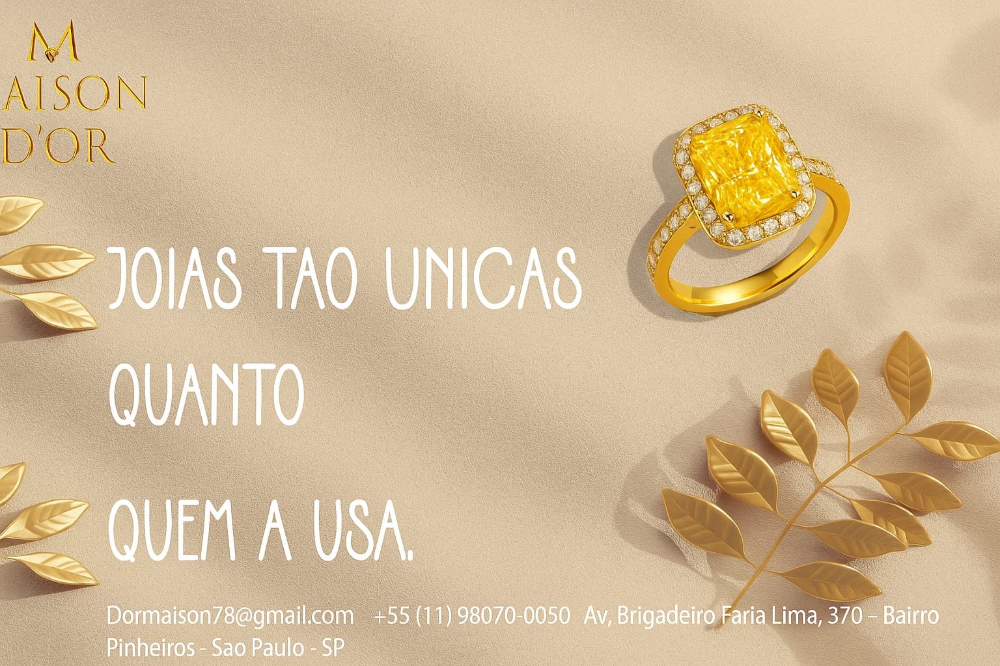

Sobre a Maison D’or
A Maison D'or é uma joalheria de luxo especializada em peças exclusivas, criadas à mão com excelência e precisão. Com mais de duas décadas de tradição, nossa marca é sinônimo de elegância, sofisticação e autenticidade.

A Nossa História
A história da Maison D'orcomeça com um homem apaixonado pela arte de criar joias. O avô da fundadora dedicava sua vida ao ofício da ourivesaria, confeccionando cada peça com as próprias mãos e um amor que ultrapassava o tempo. Em seu ateliê, o brilho do ouro se misturava ao calor do coração — era ali que nasciam obras únicas, moldadas pela paciência e pela alma de um verdadeiro artesão.
Desde criança, ela o observava trabalhar. Fascinada, aprendia com cada gesto, cada toque cuidadoso, cada detalhe que transformava o metal em poesia. Com o passar dos anos, ele começou a compartilhar seus segredos e a ensinar o valor do tempo, da dedicação e do significado por trás de cada joia.
Quando ele partiu, deixou para ela não apenas suas ferramentas, mas um legado de amor, arte e sensibilidade. Aos 22 anos, movida pela saudade e pela gratidão, ela decidiu dar continuidade a essa herança criando a Maison d’Or — que em francês significa “Casa de Ouro”.
Mais do que uma marca, a Maison d’Or é um tributo. Representa o lar, o abraço e a lembrança viva de um amor eterno — o de um avô que ensinou que cada joia deve brilhar não apenas pela beleza, mas pela emoção que carrega.
Missão e Visão
Missão: Criar joias que expressem beleza, elegância e exclusividade, proporcionando uma experiência única e inesquecível a cada cliente.
Visão: Ser referência mundial em joalheria de luxo, reconhecida pela excelência artesanal, inovação e compromisso com o design atemporal.
Nossos Valores
- Qualidade: Utilizamos apenas materiais nobres e lapidação impecável em cada peça.
- Exclusividade: Cada joia é única, feita sob medida para expressar a essência de quem a usa.
- Inovação: Estamos sempre em busca de novas formas, texturas e técnicas para criar o extraordinário.
- Elegância: Um estilo que transcende o tempo, refletindo o brilho e a sutileza da alta joalheria.